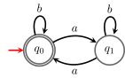

12 Regular expressions
In this chapter we define regular expressions, which informally give a way to describe algebraically all the languages for which we were able to write DFAs/NFAs. If you ever used the Linux command grep you have already used regular expressions (but with a different syntax than the one we use here).
This page is a draft!
Given an alphabet \Sigma,1 consider the language \Sigma\cup \{\textcolor{darkred}{\mathtt{(}},\textcolor{darkred}{\mathtt{)}}, \textcolor{darkred}{\mathtt{\cdot}}, \textcolor{darkred}{\mathtt{+}},\textcolor{darkred}{\mathtt{\phantom{}^*}},\textcolor{darkred}{\mathtt{\varepsilon}},\textcolor{darkred}{\mathtt{\emptyset}}\}. The language of regular expressions over \Sigma is defined as follows:
- \textcolor{darkred}{\mathtt{\emptyset}} is a regular expression;
- \textcolor{darkred}{\mathtt{\varepsilon}} is a regular expression;
- \textcolor{darkred}{\mathtt{s}} is a regular expression, for each symbol \textcolor{darkred}{\mathtt{s}}\in \Sigma;
- if r and r' are regular expressions, then \textcolor{darkred}{\mathtt{(}}r\textcolor{darkred}{\mathtt{)+(}}r'\textcolor{darkred}{\mathtt{)}} is regular expression;
- if r and r' are regular expressions, then \textcolor{darkred}{\mathtt{(}}r\textcolor{darkred}{\mathtt{)\cdot(}}r'\textcolor{darkred}{\mathtt{)}} is regular expression;
- if r is a regular expression, then \textcolor{darkred}{\mathtt{(}}r\textcolor{darkred}{\mathtt{)^*}} is a regular expression;
- nothing else is a regular expression.
To avoid writing unnecessary parentheses the \textcolor{darkred}{\mathtt{\phantom{}^*}} by convention has stronger precedence than \textcolor{darkred}{\mathtt{\cdot}}, which, in turn, is stronger than \textcolor{darkred}{\mathtt{+}}. Moreover, the \textcolor{darkred}{\mathtt{\cdot}} is often omitted (as it is often omitted multiplication in arithmetic expressions).
Example 12.1 The regular expression \textcolor{darkred}{\mathtt{a+ab^*}} (over \Sigma=\{\textcolor{darkred}{\mathtt{a}},\textcolor{darkred}{\mathtt{b}}\}) is \textcolor{darkred}{\mathtt{(a)+((a)\cdot(((b)^*)))}}.
12.1 Language described by a regular expression
What is the semantics of a regular expression? To each regular expression r over an alphabet \Sigma we associate a language \mathscr{L}(r)\subseteq \Sigma^* as follows:
- \mathscr{L}(\textcolor{darkred}{\mathtt{\emptyset}})=\emptyset;
- \mathscr{L}(\textcolor{darkred}{\mathtt{\varepsilon}})=\{\varepsilon\};
- \mathscr{L}(\textcolor{darkred}{\mathtt{s}})=\{\textcolor{darkred}{\mathtt{s}}\}, for each symbol \textcolor{darkred}{\mathtt{s}}\in \Sigma;
- if r and r' are regular expressions, then \mathscr{L}(\textcolor{darkred}{\mathtt{(}}r\textcolor{darkred}{\mathtt{)+(}}r'\textcolor{darkred}{\mathtt{)}})=\mathscr{L}(r)\cup \mathscr{L}(r');
- if r and r' are regular expressions, then \mathscr{L}(\textcolor{darkred}{\mathtt{(}}r\textcolor{darkred}{\mathtt{)\cdot(}}r'\textcolor{darkred}{\mathtt{)}})=\mathscr{L}(r)\cdot\mathscr{L}(r');
- if r is a regular expression, then \mathscr{L}(\textcolor{darkred}{\mathtt{(}}r\textcolor{darkred}{\mathtt{)^*}})=\mathscr{L}(r)^*.
Exercise 12.1 What is \mathscr{L}(r) when r is the regular expression in Example 12.1? Describe it using the standard logic notation to describe sets.
For a regular expression r, we say that r describes the language \mathscr{L}(r), in the sense that r describes a way to construct \mathscr{L}(r) from very simple languages (\emptyset,\{\varepsilon\},\{\textcolor{darkred}{\mathtt{s}}\}) using unions, concatenations and Kleene stars.
Exercise 12.2 Write regular expressions describing the following languages:
- The language of all words over \{\textcolor{darkred}{\mathtt{a}},\textcolor{darkred}{\mathtt{b}}\} of even length;
- The language of all words over \{\textcolor{darkred}{\mathtt{a}},\textcolor{darkred}{\mathtt{b}},\textcolor{darkred}{\mathtt{c}}\} ending with \textcolor{darkred}{\mathtt{abba}}.
- The language of all words over \{\textcolor{darkred}{\mathtt{a}},\textcolor{darkred}{\mathtt{b}},\textcolor{darkred}{\mathtt{c}}\} containing at least two occurrences of \textcolor{darkred}{\mathtt{bb}}.
- The language of all words over the usual English keyboard symbols that are valid email addresses.
Exercise 12.3 (Equivalence of regular expressions) This exercise is about checking the equivalence of two regular expressions using simple algebraic manipulations. We say that two regular expressions p,q are equivalent (p\equiv q) if the languages represented by p and q (resp. \mathscr{L}(p) and \mathscr{L}(q)) are the same.
Show that for all regular expressions p, q, and r:
- (p+q)^* \equiv p^*(qp^*)^*.
- p(qp)^* \equiv (pq)^*p.
- (p+q^*)^* \equiv (p+q)^*.
- If p\equiv q, then pr \equiv qr and rp \equiv rq.
- If \mathscr{L}(q) \subseteq \mathscr{L}(p), then p^*q^* \equiv q^*p^* \equiv p^*.
- p^* \equiv (\varepsilon+ p)^* \equiv (\varepsilon+ p)(p^*pp)^*.
- p^*pp + \varepsilon\equiv (p^*pp)^* \equiv (pp+ppp)^*.
- (🔥) p^*(q+rp^*)^* \equiv (p+q^*r)^*q^*.
- (🔥) (qq+qp+p)^*qpp^* \equiv p^*q(pp^*q+qp^*q)^*pp^*.
- (🔥) (\varepsilon+ \textcolor{darkred}{\mathtt{b}})\textcolor{darkred}{\mathtt{a}}^*(\textcolor{darkred}{\mathtt{b}} + \textcolor{darkred}{\mathtt{bba}}^*)^* \equiv \textcolor{darkred}{\mathtt{b}}^*(\textcolor{darkred}{\mathtt{a}} + \textcolor{darkred}{\mathtt{bb}} + \textcolor{darkred}{\mathtt{bbb}})^*\textcolor{darkred}{\mathtt{b}}^*.
To prove some of the items (especially, the last three), it is useful to apply previous equivalences.
Deciding whether two regular expressions are equivalent is \mathbf{PSPACE}-complete, i.e., informally, it is the hardest among the decision problems solvable using a polynomial amount of memory, but no limitations on the running time.
Exercise 12.4 Given a regular expression r and a word w, give an algorithm that with input r and w decides whether w\in \mathscr{L}(r) or not. What is the asymptotic cost of your algorithm w.r.t. the number of symbols in r and w?
A possibility is to use the Brzozowski derivative (see Chapter 6).
12.2 From DFAs to regular expressions
In this section we show how to associate to a DFA an equivalent regular expression. That is, given a DFA A, using Arden’s lemma (Lemma 12.1 below), we show a way to construct a regular expression r s.t. \mathscr{L}(r)=\mathscr{L}(A).2
Lemma 12.1 (Arden’s Lemma) Given A,B\subseteq \Sigma^*, consider the equation
X=A X\cup B\ ,
\tag{12.1} then X=A^* B is the smallest solution of Equation 12.1.
If \varepsilon\notin A then, this is the only solution. If \varepsilon\in A, then for every C\subseteq \Sigma^*, X=A^*(B\cup C) is a solution of Equation 12.1.
Using Arden’s Lemma we can then prove the following theorem.
Theorem 12.1 Given a DFA A, there exists a regular expression r s.t. \mathscr{L}(r)=\mathscr{L}(A).
Example 12.2 Consider the language L=\{w\in \{\textcolor{darkred}{\mathtt{a}},\textcolor{darkred}{\mathtt{b}}\}^* :|w|_{\textcolor{darkred}{\mathtt{a}}}\in 2\mathbb N\}. The minimal DFA recognizing it is the following.

The system of equations associated to it is
\left\{ \begin{align*} X_0 &= \{\textcolor{darkred}{\mathtt{b}}\}X_0\cup \{\textcolor{darkred}{\mathtt{a}}\}X_1\cup\{\varepsilon\}\\ X_1 &= \{\textcolor{darkred}{\mathtt{b}}\}X_1\cup \{\textcolor{darkred}{\mathtt{a}}\}X_0 \end{align*} \right. Since in the end we are interested into giving a regular expression usually the system above is written directly as equations on regular expressions \left\{ \begin{align*} X_0 &= \textcolor{darkred}{\mathtt{b}}X_0+ \textcolor{darkred}{\mathtt{a}}X_1+\varepsilon\\ X_1 &= \textcolor{darkred}{\mathtt{b}}X_1+ \textcolor{darkred}{\mathtt{a}}X_0 \end{align*} \right. We can apply Arden’s Lemma to both equations, but since in the end we are interested into writing down a regular expression for X_0 let’s use the rule on the second equation:
X_1=\textcolor{darkred}{\mathtt{b}}^*\textcolor{darkred}{\mathtt{a}}X_0\ , and substitute it into the first: \begin{align*} X_0 &= \textcolor{darkred}{\mathtt{b}}X_0+ \textcolor{darkred}{\mathtt{a}}\textcolor{darkred}{\mathtt{b}}^*\textcolor{darkred}{\mathtt{a}}X_0+\varepsilon \\ & =(\textcolor{darkred}{\mathtt{b}}+\textcolor{darkred}{\mathtt{a}}\textcolor{darkred}{\mathtt{b}}^*\textcolor{darkred}{\mathtt{a}})X_0+\varepsilon\ . \end{align*} Applying Arden’s Lemma again we get \begin{align*} X_0 &= (\textcolor{darkred}{\mathtt{b}}+\textcolor{darkred}{\mathtt{a}}\textcolor{darkred}{\mathtt{b}}^*\textcolor{darkred}{\mathtt{a}})^*\varepsilon \\ &= (\textcolor{darkred}{\mathtt{b}}+\textcolor{darkred}{\mathtt{a}}\textcolor{darkred}{\mathtt{b}}^*\textcolor{darkred}{\mathtt{a}})^*\ . \end{align*} Hence we got a regular expression for L: (\textcolor{darkred}{\mathtt{b}}+\textcolor{darkred}{\mathtt{a}}\textcolor{darkred}{\mathtt{b}}^*\textcolor{darkred}{\mathtt{a}})^*.
Exercise 12.5 Write a regular expression for L=\{w \in \{\textcolor{darkred}{\mathtt{0}},\textcolor{darkred}{\mathtt{1}}\}^* :\mathtt{value}_2(w)\in 3\mathbb N\}\ . (Use the DFA you contructed in Exercise 10.3.)
Assume w.l.o.g. that \Sigma does not contain the symbols \textcolor{darkred}{\mathtt{(}}, \textcolor{darkred}{\mathtt{)}}, \textcolor{darkred}{\mathtt{\cdot}}, \textcolor{darkred}{\mathtt{+}}, \textcolor{darkred}{\mathtt{\phantom{}^*}}, \textcolor{darkred}{\mathtt{\varepsilon}}, \textcolor{darkred}{\mathtt{\emptyset}}.↩︎
The same approach adapts naturally to \varepsilon-NFAs but for simplicity we describe it for DFAs.↩︎